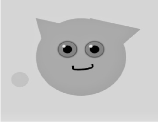
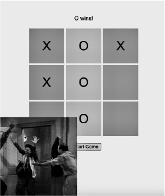
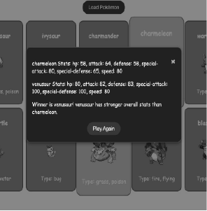

I recently attended every workshop conducted by one of my teachers, Amer, where we revisited the
fundamentals of HTML and CSS and JavaScript. It's been a valuable experience as it allows me to deepen
my understanding independently. Pokemon Code Jigglypuff Code TicTacToe Code Drumkit code Exchange currency code Student List Chat App code Pokemon Game code Easter Egg code Mario Game code
During these lectures, I diligently take notes and complete all the assignments given to me.
First Assignment:
The primary focus of my first major assignment was to create a Pokémon figure using HTML & CSS, with an emphasis
on ensuring its responsiveness across varying screen sizes. This task was instrumental in familiarizing us with
the principles of responsive web design.
Second Assignment:
For the second major assignment, the objective was to delve into the workings of AI and utilize it within
our project. We were tasked with crafting a "Jigglypuff" character using HTML & CSS, employing AI-generated
responses to guide our design process. It was a captivating endeavor that allowed us to explore AI's interaction
with different queries.
Third Assignment:
The third task introduced us to JavaScript, where we were provided with an incomplete code fraught with errors.
Our challenge was to identify and rectify these issues to finalize the game. This exercise honed our problem-solving
skills within the realm of JavaScript programming.
Fourth - Fifth - Sixth Assignment:
The next three assignments focus more on JavaScript since the latest lectures that the class had with Amer were about that topic as well.
The first assignment is about making a drumkit, which can make sounds.
The second assignment was about an application that can change money from dollars to euros.
Finally, the third assignment was about a list that collects student names, and I had to extend the code so that the user could also
remove names from the list.
These assignments were great since I also had to use JavaScript for my group projects and this portfolio. Solving the assignments
weren't too problematic, since the task descriptions were very clear and easily understandable.
Seventh & Eighth Assignment:
The next two assignments that we had were much more complicated since both of them were
more focused on JavaScript.
The first assignment of these, was about building a chat application, that we had to
design and as an additional task, I also added some functions so the user can use both emojis
and GIFs. To be able to use GIFs I needed an API, which was not so fluent for me to get but,
in the end fortunately it worked out.
In the next assignment, we had a task to make a Pokemon game using JavaScript and APIs.
For additional tasks, we could design it, and as a bonus exercise I made it possible, to replay the game without
reloading the whole page again, also I made it possible to learn about the reason why one of
the Pokemon was a winner (since it lacked a longer reasoning).
Project 3:
In our final group project, we got the assignment, to make an easter egg for the website - explorebreda.nl.
Since in our previous project, we had to work with the same client, after our research we chose international students as
our target, and we wanted to keep this plan again. Therefore we wanted to make an easter egg which is fun, building up
on curiousity, and has elements that our previous products had also (like our song). All in all we made a secret key that you find by pressing to buttons
on the keybord, and after pressing this two buttons something fun pops up with a discount (if you press it again it disappears).
For coding this easter egg, I started with making a simple website (since we didn't need it much just as a background), and then I made it fun with the use of
JavaScript and css.
Additionally I also tried to copy the real wwebsite which worked but since for us it wasn't necessery to use that for us, I stopped work on that page.
I attached the github below, for some insights.
Ninth Assignment:
In this assignment, we had to make a Mario game. We didn't start from scratch since we got a base for the code, that
everyone had to develop in some way. I wanted to stick with a somewhat Dutch design, so I used a goose as the player,
and the typical Dutch houses as the background. I also wanted to make the game a bit more challenging, so after a while,
some dancers appear which can "kill" the goose.
After I showed it to the teacher the way I expanded the game, he said my designs look always very nice (which made me a bit proud).
If you are interested in this simple game, you can see the code through the link below.


